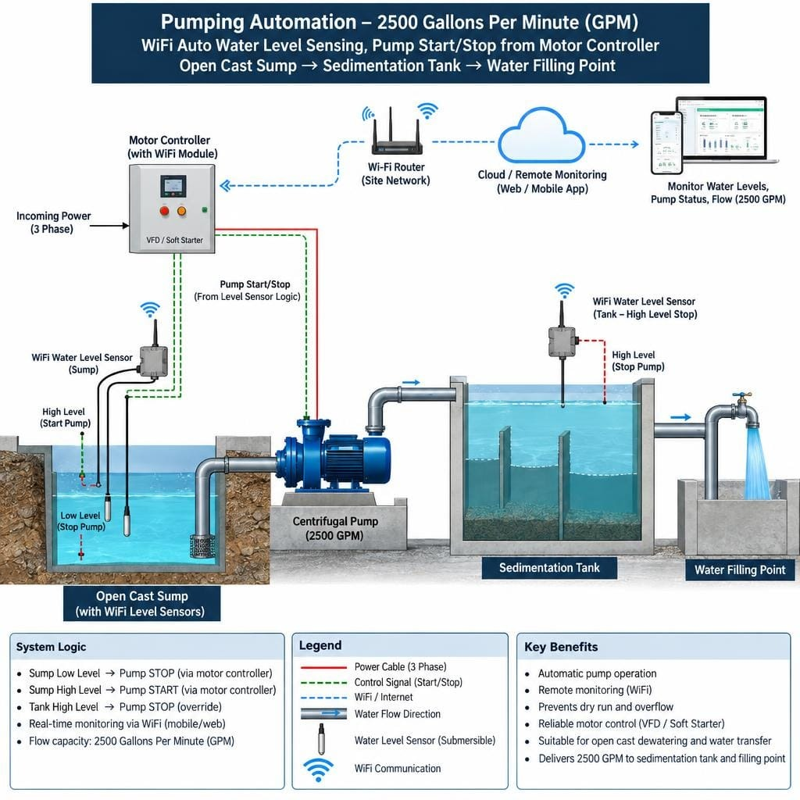
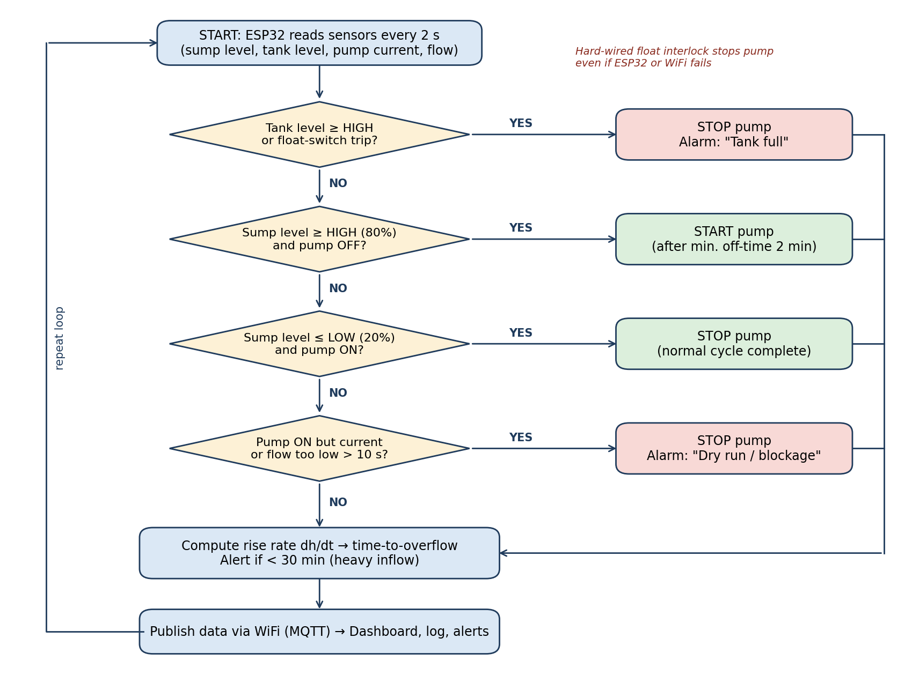
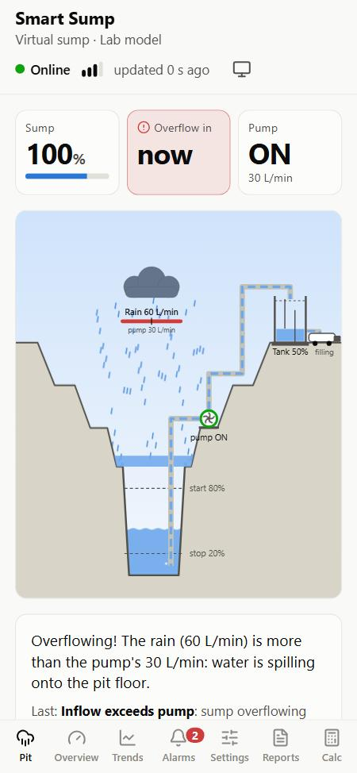
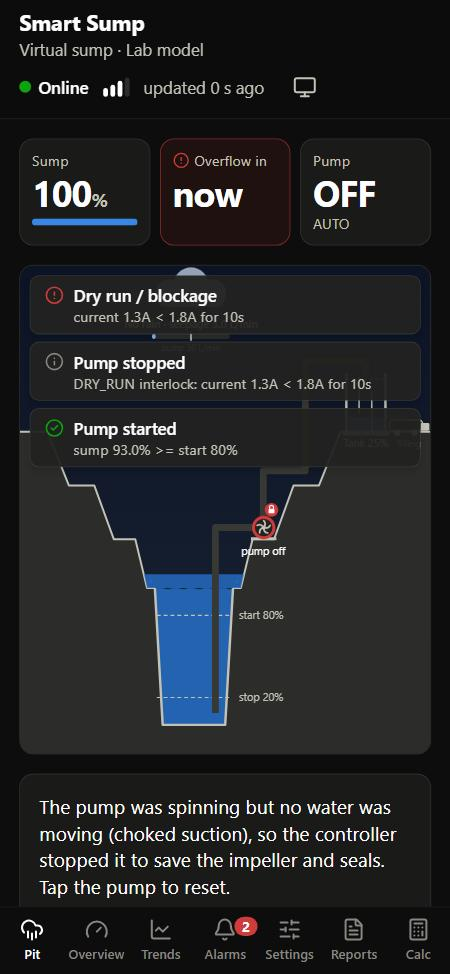
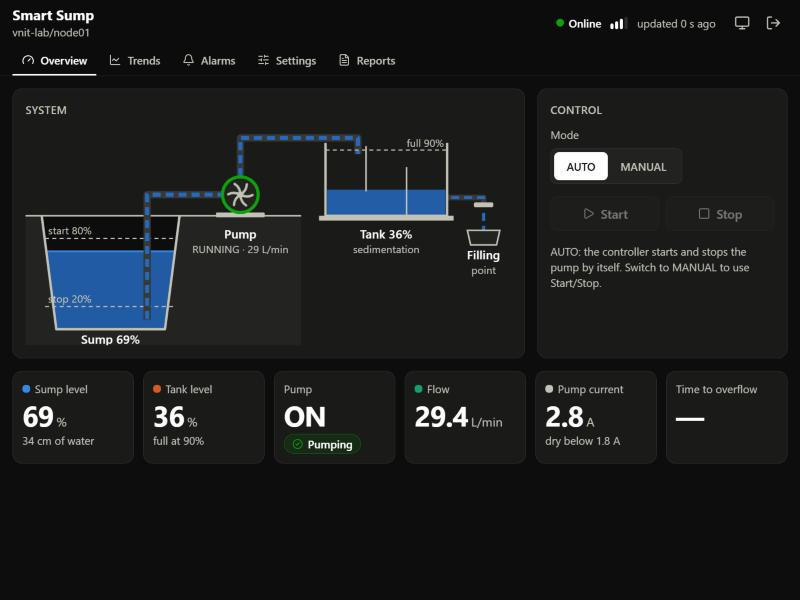

The pump is still switched by hand
Rain and groundwater collect in a sump at the lowest point of the pit. A worker checks the level by eye and starts or stops a large pump, often a 2500 US GPM machine (about 570 m³/h, 133 kW).
Dry running
Stopped too late, the pump runs without water and damages its impeller and seals.
Overflow
Started too late, the sump spills over, the bench floods and muddy water is discharged.
No records
Nobody knows the pump hours, the volume pumped or the energy used.
No warning
Nothing alerts the crew when a storm fills the sump quickly.
Sources: Sahoo, Bandyopadhyay & Banerjee, J. Cleaner Production (2014); DGMS pre-monsoon guidance.
Sense. Decide. Switch the pump.

Sense
Waterproof ultrasonic level sensors in the sump and the sedimentation tank, with float switches as a backup. Pump current and flow are measured too.
Decide
An ESP32 runs the control logic: start at 80 %, stop at 20 %, plus safety interlocks for tank-full, dry-run and sensor faults.
Switch & warn
The ESP32 drives the existing starter through a relay. A phone dashboard shows everything live and predicts the minutes left before overflow.
Fail-safe first
The pump logic runs on the ESP32 itself, so the pump stays safe even if WiFi, the internet or the server fails. A hard-wired float switch in the stop circuit is the last line of defence.
Seven rules, checked every half second
The same rules run in the simulator, the phone app and (next) the ESP32 firmware. 33 automated tests cover every rule, and a cross-check proves the app and the Python reference give identical results.
- Tank full: pump off and locked until the tank drains 10 % below the limit.
- Sensor fault: no valid level for 10 s, so fall back to the float switches.
- Dry run / blockage: pump on but current or flow too low, so stop it and lock out.
- Start: sump ≥ 80 % and the motor has rested long enough.
- Stop: sump ≤ 20 % and the pump has run long enough.
- Backup floats: the high float forces a start and the low float forces a stop.
- Manual: the operator drives the pump, but rules 1 and 3 still apply.

A virtual sump you can play with
The whole system runs in your browser or as an Android app: a simulated pit driven by the real control logic. Make it rain, block the strainer, close the tank outlet, and watch the controller react.



Touch the pit
Drag the cloud for a storm, tap the pump to drive it, and read a plain-words explanation of every decision.
Lab model or mine
An 80 L lab sump, or a 40 × 30 × 4 m mine sump with a 2500 GPM pump. Run it at up to 1000× speed.
Sump calculator
Volume, fill and pump-down times, pump starts, energy and cost, and the DGMS storm-storage check. Then simulate your own sump.
Android 8.0+, about 340 KB, works offline. Android asks once to allow installing an app from outside the Play Store.
Built and tested so far
- Control logic with 33 unit tests, one or more per rule, plus no-chatter checks
- Simulator with water physics and 6 scenarios: normal, heavy rain, dry run, tank full, WiFi drop, sensor fault
- MQTT messaging exactly like the ESP32, including "device offline" detection
- Logger: history database, daily report (pump hours, m³, kWh, ₹), CSV export, Telegram alerts
- Phone-first web dashboard and this virtual-sump app
- ESP32 firmware (PlatformIO), with the same rules ported to C++
- Lab model: two 50–100 L tanks and a 0.5 HP pump, then testing
- Scale-up design for a 2500 GPM pump: panel interface, BOM and cost
| Student | Golsar Keshav Kalyanrao B.Tech Mining Engineering, VNIT Nagpur |
| Mentor | Dr. Nikhil Ninad Sirdesai Assistant Professor |
| Programme | TEXMiN UG Fellowship 2026 |
| Domain | Monitoring and Tracking Technologies for Mines |
| Plan | 24 weeks, about ₹12,500 for the lab prototype |
| Stack | ESP32 · MQTT · Python · React |